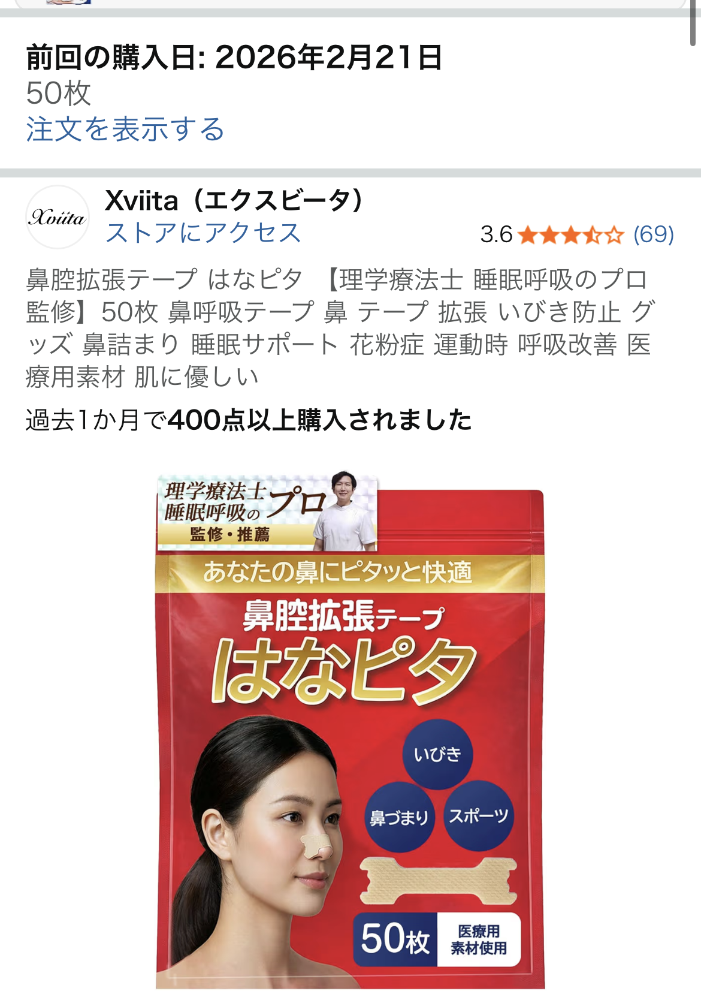

日本メーカー鼻腔拡張テープを使って分かった正直な感想【Amazonプライベートブランドと比較】
本記事には広告・アフィリエイトリンクが含まれます。リンク経由のご購入により、当サイトが報酬を得る場合があります。

結論：日本メーカー品は悪くないが、総合的にはAmazonブランドに軍配
今回は、日本メーカーの鼻腔拡張テープを実際に使ってみた正直な感想をまとめます。 結論から言うと、「使えなくはないけれど、以前購入したAmazonプライベートブランドの鼻腔拡張テープの方が総合的に満足度は高い」と感じました。
特に気になったのが、テープを鼻に貼り付けたときに繊維が鼻についてかゆくなってしまった点です。 一方で、Amazonブランドの方はプラスチック系の素材で、肌に触れたときの違和感が少なく、就寝中もあまり気になりませんでした。
とはいえ、日本メーカー品にも「国産ブランドの安心感」「ドラッグストアで見つけやすい」といったメリットはあります。 ここからは、実際の使用感をもう少し細かくレビューしていきます。
日本メーカー鼻腔拡張テープを使って感じたメリット・デメリット
まずは、日本メーカー品を数日間使ってみて感じたポイントを、メリット・デメリットに分けて整理します。 あくまで一個人の体験談であり、すべての方に当てはまるわけではない点はご留意ください。
【良かった点】
- 日本メーカーという安心感があり、パッケージや説明書も丁寧で分かりやすい
- 粘着力はしっかりしており、寝返りを打っても朝まで剥がれにくい
- サイズ展開が複数あり、鼻の大きさに合わせて選びやすい
【気になった点】
- テープの繊維が鼻に残る感覚があり、貼った部分がかゆくなることがあった
- 肌が敏感な方だと、長時間使用で赤みや違和感を覚える可能性がある
- 素材の厚みがやや気になり、マスクと併用するときに存在感を感じる場面があった
特に「かゆみ」に関しては個人差が大きい部分ですが、私の場合は数時間経つと鼻の周りを触りたくなる感覚がありました。 その点、プラスチック系素材のAmazonブランドは、表面がなめらかで繊維っぽさが少なく、かゆみはほとんど気になりませんでした。
Amazonプライベートブランドとの比較表
ここでは、日本メーカー品と、以前購入して気に入っているAmazonプライベートブランドの鼻腔拡張テープを、体験ベースで比較してみます。 あくまで個人の使用感に基づく比較であり、性能を保証するものではありません。
| 項目 | 日本メーカー品 | Amazonプライベートブランド |
|---|---|---|
| 素材の印象 | 繊維感があり、肌に触れると少しザラつきを感じる | プラスチック系でなめらか。違和感は比較的少ない |
| 装着時のかゆみ | 鼻に繊維がつく感覚があり、かゆみを感じることがあった | 個人的にはかゆみはほぼ気にならず、長時間でも快適 |
| フィット感 | 粘着力は強めで、しっかり固定される印象 | 必要十分な粘着力で、貼り直しもしやすい |
| 総合満足度 | 星5つ中3（悪くはないがリピートは悩む） | 星5つ中4〜5（価格と使い心地のバランスが良いと感じた） |
こうして並べてみると、日本メーカー品は「しっかり感」はあるものの、肌へのやさしさという点ではAmazonブランドの方が一歩リードしている印象です。 特に、睡眠中に長時間貼り続けるアイテムだからこそ、素材との相性は重要だと感じました。
鼻腔拡張テープを選ぶときのチェックポイント
鼻腔拡張テープは、いびき対策や鼻づまり対策、睡眠の質向上を目的に使う方が多いアイテムです。 せっかくなら、自分の肌や生活スタイルに合ったものを選びたいところです。
選ぶときに意識したいポイントは、次の3つです。
- 肌に合う素材かどうか（繊維感・プラスチック系など）
- 粘着力と剥がしやすさのバランス
- 枚数・価格のバランス（継続使用しやすいか）
私の場合、かゆみが出やすいタイプだったので、最終的には「肌に触れたときの違和感が少ないか」を最重視するようになりました。 その観点では、Amazonプライベートブランドの鼻腔拡張テープは、価格と使い心地のバランスが良く、リピートしやすい選択肢だと感じています。
こんな人にはAmazonブランドの鼻腔拡張テープが合いそう
体験を踏まえると、次のような方には、Amazonプライベートブランドの鼻腔拡張テープが特に検討しやすいと感じました。
- 繊維っぽい素材が肌に触れるとかゆくなりやすい方
- まずはコスパの良い鼻腔拡張テープから試してみたい方
- 就寝中の違和感をできるだけ減らしたい方
もちろん、肌質や鼻の形、睡眠環境によって感じ方は大きく変わります。 いきなり大量購入するのではなく、まずは少ない枚数から試して、自分の肌との相性を確認するのがおすすめです。